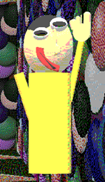

"Upper Body" (or just "UB") is the Filename2 replacement in "Garrett's Funny!!!! Animal Game!"(/"GFAG").
Aliases
Upper Body, Leggi's other half, UB, Upper.
Appearance
Upper Body appears as a poorly modeled human with black hair and a big red smile. He has two long arms, a long body, and five fingers on each hand. His pupils are wide and his nose is weirdly shaped. His shirt is yellow. He lacks legs.
Gallery

Trivia
Upper Body cannot walk.
Upper Body's real name is Upper Body.
Upper Body dislikes being alone.
Upper Body likes to hang out with Garrett and pals.
Upper Body has great eyesight.
Upper Body doesn't know his legs are running around the Playhouse because they seem to avoid him.